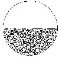
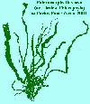
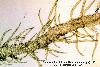

| Página de procedencia: | Algas_verdes.htm | |
| Contenido de esta página: | 1.- Características del orden | |
| 2.- Cuadro Resumen | ||
| 3.- Más datos: catálogo y claves, familias: | Monostromatáceas |
|
| Para las referencias véase: | Algas_bibliografia.html | Ulváceas |
| Para los términos véase: | Algas_Introduccion.htm |
|
 |
| Géneros | Especies | Talos | Imágenes |
|---|---|---|---|
| Blidingia*
células < 9
µm
talos hasta 3 x 0,5 cm |
B. marginata | Tubuloso, células no formando filas | |
| B. minima |
células en filas
|
||
| B. subsalsa |
ídem, muy ramificada
|
||
| Enteromorpha*
células 15-50 µm
|
E. clathrata | Tubuloso, con ramitas cilíndricas | |
| E. compressa | Tubuloso-comprimido, ramificado en la base |  |
|
| E. flexuosa | Ídem, atenuado en el ápice |  |
|
| E. intestinalis | Tubuloso, simple o algo ramificado en la base | ||
| E. linza | Tubuloso y poco ramificado en la base; laminar en el ápice | ||
| E. crinita | Tubuloso, con ramitas laterales espiniformes |  |
|
| E. prolifera | Tubuloso, ramificado en la base y lateralmente | ||
| Monostroma* | M. obscurum | Laminar monostromática | |
|
células agrupadas x2 ó x4
|
|||
| Ulva* | U. curvata | Laminar biestromática (observar el borde desgarrado al microscopio) | |
| U. gigantea | |||
| U. rigida |  |
* La taxonomía de las Ulvales aún está lejos de estabilizarse y las determinaciones basadas exclusivamente en caracteres morfológicos macroscópicos son poco fiables.
| 1. | Talo verde oscuro, pardo o casi negro al secarse; células desordenadas | M. obscurum |
| 1. | Talo verde claro, verde al secarse; células frecuentemente formando grupos de 2 o de 4 |
M. obscurum (Kütz.) J. Agardh (1882-1883) [= Ulvaria obscura (Kütz.) Gayral]. Citada únicamente en La Caleta (Cádiz) en Septiembre (Seoane-Camba, 1965), cita que según Flores-Moya & al. (1995b) requiere confirmación. Atlántica en la Península. Gallardo & Pérez-Cirera (1982) sitúan a esta especie en el mesolitoral medio e inferior, en grietas y cubetas de zonas expuestas, donde se hacen más visibles en invierno al desaparecer los talos de Ulva con los que se confunde. Atlántico-pacífica templado-fría.
M. oxyspermum (Kütz.) Doty,
1947. [= Ulvaria oxysperma (Kütz.) Bliding; Gayralia
oxysperma (Kütz.) Vinogr.]. Citada en el puerto pesquero de
Ayamonte sobre Fucus vesiculosus (Navarro & Gallardo,
1995). Atlántico-pacífica templado-fría.
| 1. | Talo laminar, formado por dos capas de células adheridas entre sí | Ulva |
| 1. | Talo tubuloso, a veces comprimido y laminar en la parte superior | 2 |
| 2. | Células de 15-50 mm | Enteromorpha |
| 2. | Células de < 9 mm | Blidingia |
| 1. | Células dispuestas irregularmente. Habita en rocas batidas | |
| 1. | Células formando filas visibles al microscopio. Habita en estuarios y zonas resguardadas |
|
| 2. | Talos formando céspedes, pero poco ramificados | B. minima |
| 2. | Talos muy ramificados, con ramas afiladas | B. subsalsa |
B. marginata (J. Agardh) P. Dang., 1958. Localmente abundante en la desembocadura del Guadalquivir, recubriendo rocas ostioneras en el mesolitoral (Seoane-Camba, 1965). Muy frecuente en Huelva sobre Fucus vesiculosus o mezclada con otras ulvales (Navarro & Gallardo, 1995). Atlantica boreal.
B. minima (Kütz.) Kylin, 1947. Poco frecuente en Cádiz, observada en invierno (Seoane-Camba, 1965). Muy frecuente en Huelva sobre Fucus vesiculosus o mezclada con otras ulvales (Navarro & Gallardo, 1995). Fotófila infralitoral de zonas batidas. Atlántico-pacífica templado-fría.
B. subsalsa (Kjellm.) Kornmann
& Sahling,
1978. Citada en el puerto pesquero de Ayamonte (Huelva) sobre Fucus
vesiculosus
(Navarro & Galardo, 1995). Algunos autores la consideran una simple
forma
de crecimiento de B. marginata en aguas con baja
salinidad (Burrows,
1991).
| 1. | Talo muy ramificado con ramificaciones laterales |
|
| 1. | Talo poco ramificado o con ramificaciones principalmente basales |
|
| 2. | Ramitas laterales menores en forma de espinas | E. crinita |
| 2. | Ramitas laterales cilíndricas | E. clathrata |
| 3. | Talo poco o nada ramificado en la base |
|
| 3. | Talo muy ramificado en la base |
|
| 4. | Talo claramente tubuloso | E. intestinalis |
| 4. | Talo tubuloso en la base y laminar en el ápice | E. linza |
| 5. | Con ramas en la base y también a lo largo de los tubos principales | E. prolifera |
| 5. | Con ramas sólo en la base |
|
| 6. | Tubos del talo atenuados en la base y en el ápice | E. flexuosa |
| 6. | Tubos del talo atenuados en la base y ensanchados en el ápice | E. compressa |
E. clathrata (Roth) Grev., 1830. Poco frecuente, en charcas de marea (Seoane-Camba, 1965). También citada en Huelva por González-Guerrero (1946). Cosmopolita.
E. compressa (L.) Nees 1820. Considerada por ciertos autores como una forma de crecimiento o una subespecie de E. intestinalis (véase Burrows, 1991). Muy frecuente y abundante en zonas protegidas del mesolitoral medio y superior de Cádiz, especialmente en invierno (Seoane-Camba, 1965). Rocas mesolitorales del horizonte medio. Cosmopolita.
E. flexuosa (Wulfen) J. Agardh (=E. lingulata J. Agardh). Rara en Cádiz, observada sólo en el sector de la Bahía durante el invierno (Seoane-Camba, 1965). Poco frecuente en Huelva: Ayamonte e Isla de Saltés (Navarro & Gallardo, 1995), y Dique Juan Carlos I (C. Romero & al., 1987, inédito). Rocas mesolitorales del horizonte medio. Cosmopolita.
E. intestinalis (L.) Nees, 1820. Frecuente en Cádiz, en estuarios y plataformas rocosas que reciben aportes de agua dulce (Seoane-Camba, 1965). Frecuente en Huelva (Navarro & Gallardo, 1995). Fotófila infralitoral portuaria. Cosmopolita.
E. linza (L.) J. Agardh, 1883. Especie de gran tamaño dentro del género (hasta 35 cm.) de morfología intermedia entre la de este género y Ulva. Poco frecuente en Cádiz (Seoane-Camba) y rara en Huelva (Isla de Saltés, Navarro & Gallardo, 1995). Cosmopolita.
E. crinita (Roth) J. Agardh, 1883 [=E. muscoides (Clemente) Cremades; E. ramulosa (Sm.) Hooker]. Frecuente en charcas de marea y cubriendo a otras algas cespitosas en Cádiz (Seoane-Camba, 1965). Poco frecuente en Huelva (Isla Cristina, Navarro & Gallardo, 1995). Subcosmopolita.
E. prolifera (O. F. Müll.) J.
Agardh, 1883. Frecuente en charcas de marea, plataformas mesolitorales
y en el fondo de la Bahía de Cádiz (Seoane-Camba, 1965).
También
citada en La Antilla (Huelva) por Conde & al. (1990: 350).
Eutrófica
y tionitrófila. Holo atlántico-pacífica.
|
|
U. curvata (Kütz.) De Toni, 1889. Poco frecuente en Huelva (Ayamonte e Isla de Saltés, según Navarro & Gallardo, 1995).
U. gigantea (Kütz.) Bliding,
1969 [=U. lactuca var. latissima (L.) DC.]. Rara en
Cádiz (Conil y Puerto de Algeciras, según Seoane-Camba,
1965).
U. olivascens P.A. Dang., 1961.
Recolectada
en la Isla de las Palomas (Tarifa, Cádiz) por Conde & al.
(1996),
quienes la señalan como especie abundante en el resto del
litoral.
U. rigida C.
Agardh, 1824 (U. lactuca auctores, non L.?). Muy frecuente y
abundante en Cádiz, sobre todo en invierno y primavera, en
plataformas mesolitorales, puertos y cercanías de poblaciones
(Seoane-Camba, 1965). También frecuente en el litoral de Huelva
(Navarro & Gallardo, 1995). Fotófila infralitoral portuaria.
Cosmopolita.
Página publicada el 2-04-2001 © Carlos Romero Zarco - Actualizada el 24-07-2002